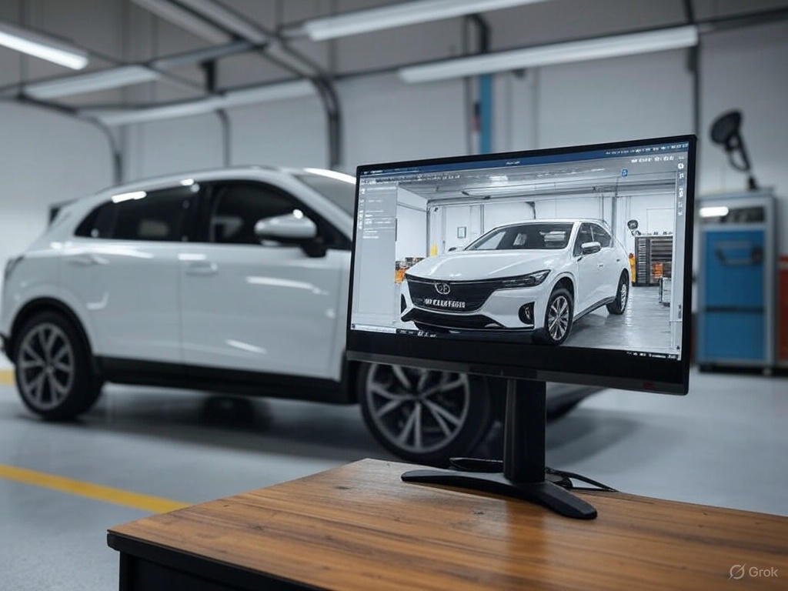
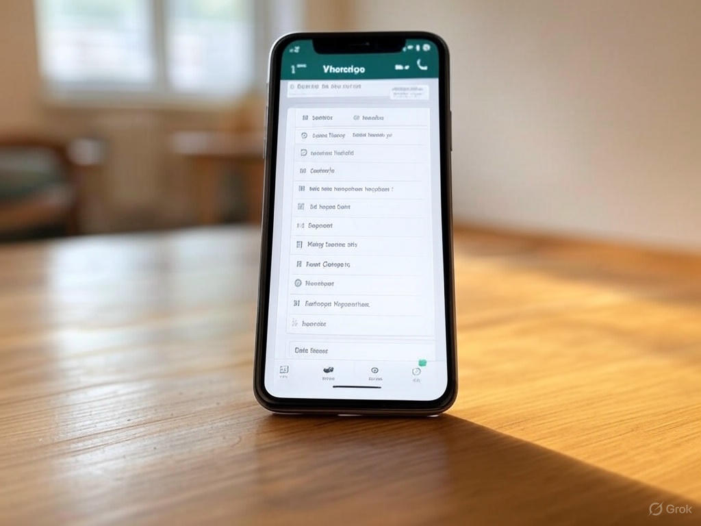

5 erros que fazem você perder propostas no WhatsApp
Como funciona a avaliação automática do seu carro com IA?
Checklist completo antes de anunciar seu carro
Como negociar com segurança no WhatsApp
Qual a melhor hora do ano para vender seu carro?
Carro usado ou seminovo: qual a diferença e qual compensa mais?
Quanto vale o seu carro? Ferramentas para descobrir o preço justo
O que observar ao comprar um carro de pessoa física?
Como tirar fotos que vendem seu carro mais rápido
Use a luz natural, prefira horários como início da manhã ou fim da tarde. Fotografe o carro limpo, em um ambiente neutro. Mostre ângulos frontais, laterais, traseiros, interior e painel. Capriche na qualidade da imagem.
5 erros que fazem você perder propostas no WhatsApp
Demorar para responder
Não enviar fotos claras
Ser muito informal
Não informar o preço
Passar desconfiança

Como funciona a avaliação automática do seu carro com IA?
Com base no modelo, ano, versão, estado de conservação e mercado local, a IA compara com milhares de anúncios e vendas para sugerir um preço competitivo.
Checklist completo antes de anunciar seu carro
Fotos de qualidade
Preço competitivo
IPVA em dia
Documentação ok
Limpeza e manutenção em dia

Como negociar com segurança no WhatsApp
Evite passar dados pessoais logo de início. Prefira marcar encontros em locais públicos. Desconfie de propostas muito acima do valor pedido. Use contratos e recibos na negociação.
Qual a melhor hora do ano para vender seu carro?
Janeiro, março e agosto são bons meses, com maior procura por veículos usados. Evite dezembro e épocas com feriados longos, quando há menos compradores ativos.
Carro usado ou seminovo: qual a diferença e qual compensa mais?
Seminovo tem até 3 anos de uso e quilometragem baixa, geralmente com menos desgaste. Usado pode ser mais antigo, mais barato, mas exige mais atenção na análise.
Quanto vale o seu carro? Ferramentas para descobrir o preço justo
Use plataformas como Webmotors, OLX, Tabela Fipe e o próprio Tindra para comparar preços de veículos semelhantes e definir um valor realista.
O que observar ao comprar um carro de pessoa física?
Verifique histórico do veículo, documentação, quilometragem real, vestígios de batidas, funcionamento geral, e se possível leve a um mecânico de confiança.